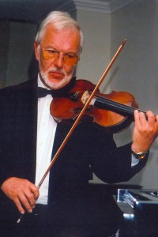

Andante Favore :
Een kamerorkest uit Sint-Martens-Latem, het kunstdorp aan de Leie, onder de muzikale leiding van Eric De Lombaerde met een uitgebreid repertoire in drie genres: klassieke, moderne en salonmuziek.
Deze mix, een vrij uniek kenmerk van Andante Favore, leverde dit ensemble reeds vele optredens op in Vlaanderen, Wallonië en in het buitenland. In 2003 traden ze op in de Vlaamse Ambassade in Londen.
De afgelopen jaren begeleidde Andante Favore ook regelmatig artiesten zoals Jo Lemaire, Marco Bakker en Willy Claes en werkte mee aan CD-opnames van ondermeer DeLaVega.
Sedert enkele jaren vult de sopraan Ann De Winter als gastvedette het orkest aan. En met succes. Want voor de drie genres waarin Andante Favore zich profileert, betekent Ann De Winter een gesmaakte meerwaarde.
Ook voor jouw receptie, diner, feestelijke gelegenheid of academische zitting kan Andante Favore de betaalbare meerwaarde zijn die je zoekt.
Andante Favore speelt een uitgebreid repertoire dat zich in drie genres laat samenvatten: klassieke, moderne en salonmuziek. Begin 2007 kon het orkest de hand leggen op een grote hoeveelheid partituren in dat laatste genre. Maanden van selecteren, uittesten, adapteren en herorkestreren resulteerden uiteindelijk in een veertigtal pareltjes van salonmuziek.

Dit ruime repertorium is een handige troef bij:
En last but not least: de laatste jaren treedt Andante Favore zeer frekwent op met Ann De Winter als gast-sopraan, en dit zowel op recepties, feesten en diners, als academische zittingen, missen, kerstevocaties als avondvullende concerten.